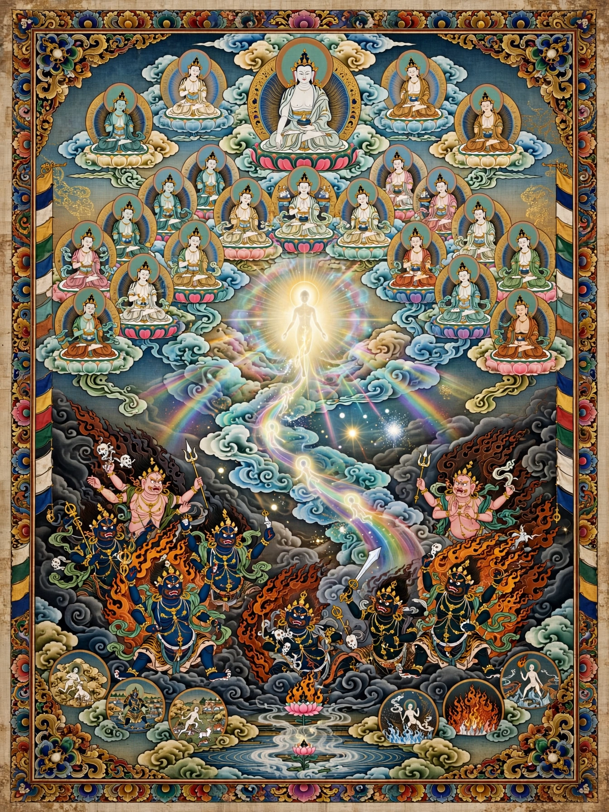

In some schools of Buddhism, bardo (Tibetan: བར་དོ་, Sanskrit: antarābhava) is an intermediate, transitional or liminal state between death and rebirth. The concept arose soon after Gautama Buddha's death, with a number of earlier Buddhist groups accepting the existence of such an intermediate state, while others denied it.

Used loosely, the term bardo refers to the state of existence intermediate between two lives on earth. The Bardo Thodol, commonly known in the West as the Tibetan Book of the Dead, describes experiences in the interval between death and rebirth.
Traditions list six bardos: the bardo of this life, of dreaming, of meditation, of dying, of dharmata, and of becoming.